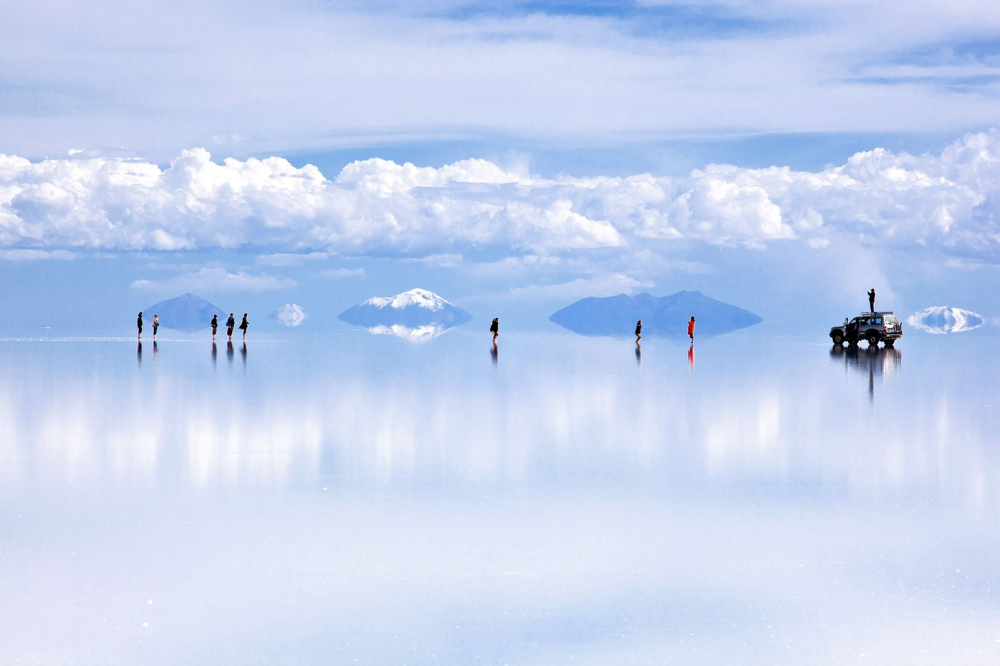
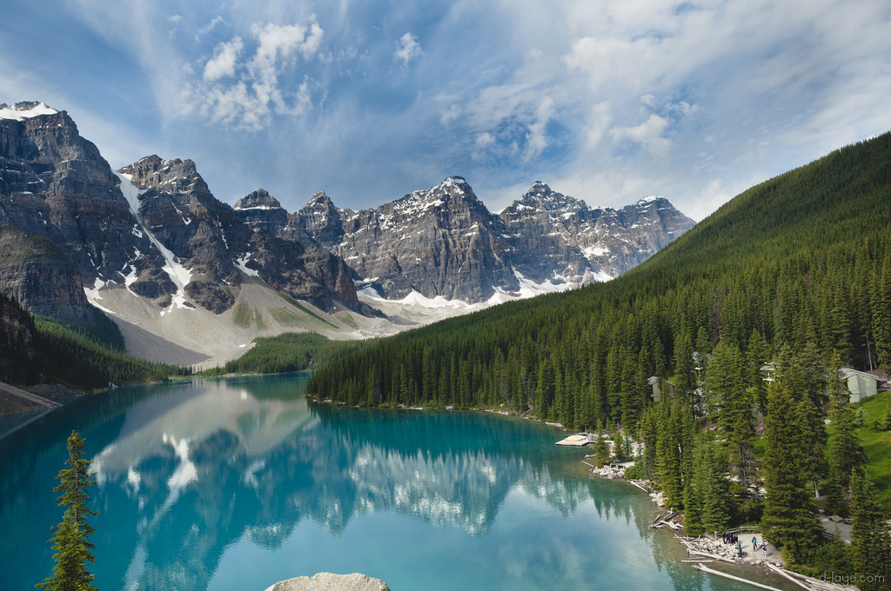
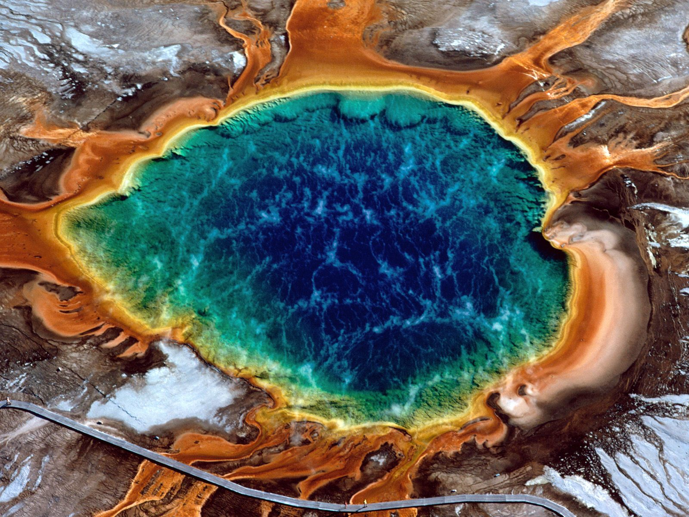
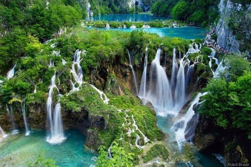

Vivimos en un planeta realmente increíble lleno de bellezas naturales que nos dejan atónicos y nos hacen preguntarnos “¿de dónde ha salido esto?”. Y la respuesta es la naturaleza lo ha creado, es increíble como tanta belleza es creada de la espontaniedad, por ello te mostramos algunos de los lugares naturales más hermosos.
1. Pamukkale
Pamukkale es una localidad situada en la mitad occidental de Turquía, célebre por sus aguas termales ricas en minerales que emanan de terrazas de roca travertina blanca. Linda con Hierápolis, una antigua ciudad balneario que se fundó alrededor del año 190 a. C. Entre las ruinas, se pueden encontrar un teatro bien conservado y una necrópolis con sarcófagos que se extiende a lo largo de 2 km. La piscina termal es famosa por sus columnas romanas sumergidas a consecuencia de un terremoto.

2. Salar de Uyuni
Este desierto de sal es el espejo más grande del planeta, esta gran extensión tiene alrededor de 10 mil millones de toneladas de sal y representa un tercio de las reservas de litio del planeta. Está a casi 4000 metros del suroeste boliviano y tiene 3 especies diferentes de flamencos. Es un lugar impresionante donde el cielo se confunde con el desierto.
3. Lago Moraine y el Valle de los tres Picos
El Lago Moraine es un lago glacial en el Valle de los Diez Picos y tiene casi 2000 metros de altitud. es un valle localizado en el Parque Nacional Banff, en la provincia de Alberta, Canadá. El valle recibe su nombre a causa de los diez picos que lo rodean. Sin duda un "must go" cuando visites Cánada. Sus vistas son increíbles, la paz y tranquilidad se siente en el ambiente.
4. Gran fuente prismática
El Parque Nacional de Yellowstone (Wyoming) es el más antiguo y también uno de los lugares más encantadores del mundo. Forma parte del Patrimonio de la Humanidad de la UNESCO y es famoso por sus géiseres de colores. Es el lugar con más aguas termales en Estados Unidos y el agua que sale de estos manantiales está llena de minerales de calcio, silicato y magnesio. Esta es la fuente más popular en los Estados Unidos y se distingue por sus increíbles colores del arco iris, claros y brillantes.
5. Lost World Valley
El Lost World Valley es un paraíso escondido, lejos de la civilización, metido en el interior de las selvas de la Costa Dorada. Situado en lo más profundo de la selva interior de Gold Coast y a solo una hora y media de Surfers Paradise Beach. Verás pozas, imponentes cascadas y un denso manto de selva tropical. Los paisajes te recordarán efectivamente a las escenas de Parque Jurásico, y seguro que con un nombre tan acertado como “Mundo Perdido” viajarás atrás en el tiempo en uno de los paisajes más increíbles que ofrece la Costa de Oro.
